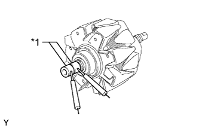
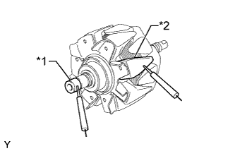
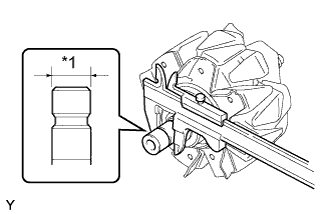
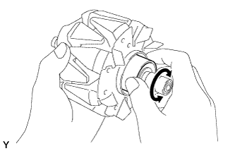
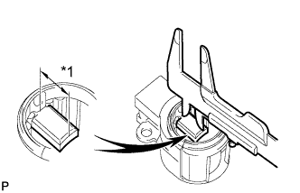

GENERATOR > INSPECTION |
| 1. INSPECT GENERATOR ROTOR ASSEMBLY |
Check the generator rotor for an open circuit.
|  |
Measure the resistance according to the value(s) in the table below.
| Tester Connection | Condition | Specified Condition |
| Slip ring - Slip ring | 20°C (68°F) | 1.5 to 1.9 Ω |
| *1 | Slip Ring |
Check if the generator rotor is grounded.
|  |
Measure the resistance according to the value(s) in the table below.
| Tester Connection | Condition | Specified Condition |
| Slip ring - Rotor core | Always | 10 kΩ or higher |
| *1 | Slip Ring |
| *2 | Rotor Core |
|  |
Using a vernier caliper, measure the slip ring diameter.
| *1 | Diameter |
|  |
Check that the generator rotor bearing is not rough or worn.
If necessary, replace the generator rotor assembly.
| 2. INSPECT GENERATOR BRUSH HOLDER ASSEMBLY |
|  |
Using a vernier caliper, measure the brush length.
| *1 | Length |